Olá, sou a turtle.
A nossa espécie
está em perigo.
A nossa comida,
o nosso lar
e as nossas crias sofrem cada vez mais.
Vem descobrir
o que nos afeta
e como nos podes ajudar.
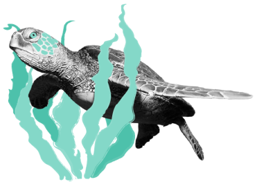
O que nos prejudica.
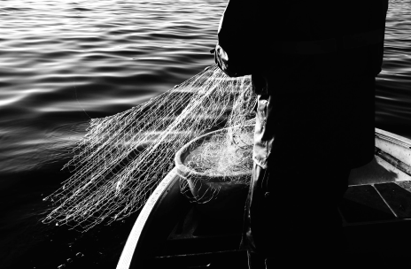

Captura acidental em redes de pesca.
Todos os anos, centenas de milhares de tartarugas marinhas são capturadas acidentalmente em redes de pesca, dedicadas à pesca de outros animais.
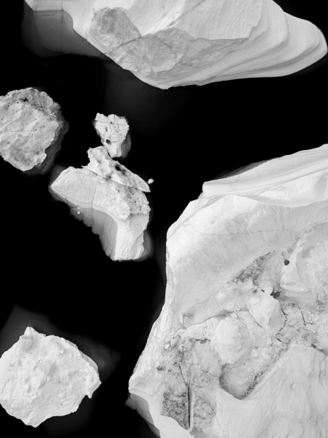

Aquecimento Global.
Todos os estados da vida das tartarugas marinhas são afetados por condições ambientais, como a temperatura, até mesmo o sexo da tartaruga bebé. Temperaturas quentes incomuns causadas por alterações climáticas têm vindo a perturbar as percentagens habituais, resultando na chocagem de menos machos. Para além disto, o aquecimento global pode ainda causar subida do nível médio do mar, destruindo praias cruciais à chocagem dos ovos, bem como os seus ninhos.
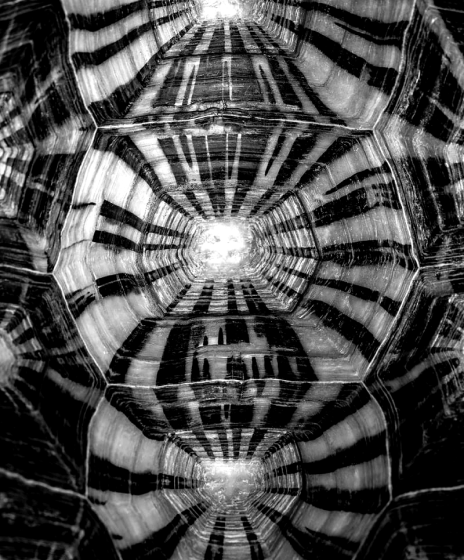
Tráfico de tartarugas e carapaças.
A captura de tartarugas e tráfico em mercados domésticos e internacionais encontra-se proibida mundialmente, no entanto continua a verificar-se em todo mundo, sendo muito requisitadas pelas suas carapaças.
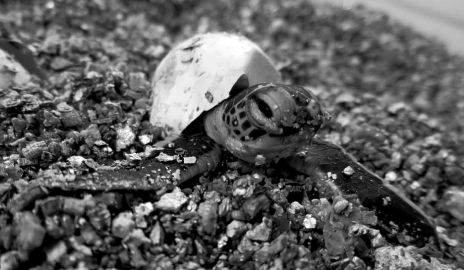
Consumo ilegal de ovos e carne das tartarugas.
A carne e ovos de tartaruga ainda são uma forma de alimento e de enriquecimento para muita gente em todo o mundo. Para além disto, algumas pessoas matam tartarugas para remédios e cerimónias religiosas. Todos os anos, dezenas de milhares de tartarugas são assassinadas destas formas, devastando populações de espécies que já estão em perigo de extinção.
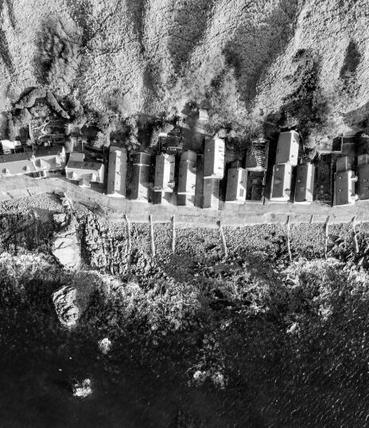
Desenvolvimento costeiro.
Sendo as tartarugas dependentes de praias para porem os seus ovos, a construção descontrolada na costa, a sobrepopulação nas praias e outras atividades humanas têm vindo a destruir e a perturbar o processo de chocagem dos ovos. A luz das estradas desorienta as tartarugas bebés no seu caminho para o mar, podendo estas falecer por desidratação, predação ou mesmo por atropelamento nas marginais, e a construção costeira compacta a areia circundante, impedindo as fêmeas de por os seus ovos na areia. Para além disto, locais de alimento das tartarugas tais como corais e algas têm vindo a ser cada vez mais perturbados por atividades costeiras, dificultando assim a sua sobrevivência.
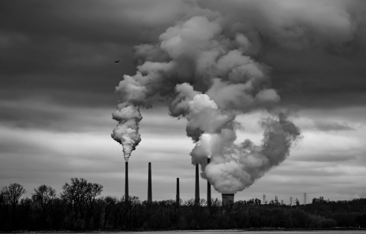
Poluição.
Para além da poluição por parte dos plásticos, a poluição marinha com químicos pode ser prejudicial para estes animais. Quando a poluição entra no mar, contamina e mata animais que servem de comida às tartarugas. Derrames de óleo, poluição costeira e fertilizantes contribuem todos para a poluição da água. À medida que as toxinas são libertadas dos poluentes, ficam mais concentradas. Como resultado, estas partículas mais toxicas tornam se comida para muitos seres da "food chain", incluindo as tartarugas.
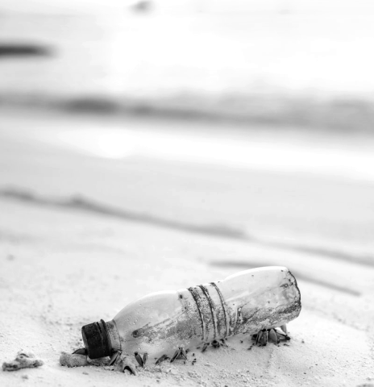
Plástico.
Recorrentemente, as tartarugas marinhas confundem sacos de plástico por alforrecas, comendo-as, o que pode levar à sua morte. Pesquisas mostram que uma tartaruga tem 22% de probabilidade de morrer se comer apenas um pedaço de plástico. O plástico pode cortar órgãos e fazer feridas, ou até mesmo entupir os intestinos.
Conhece-nos melhor.
Fica a conhecer melhor as espécies de tartarugas que podes encontrar em Portugal.
Tartaruga Comum
Caretta Caretta
Tartaruga Verde
Chelonia mydas
Tartaruga de Couro
Dermochelys coriacea
Tartaruga de Escamas
Eretmochelys imbricata
Tartaruga de Kemp
Lepidochelys kempii
Tartaruga Comum
Caretta Caretta
Habitantes dos oceanos Índico, Pacífico, Atlântico e mar Mediterrâneo, apenas
encontradas em terra quando desovam. Usam as suas mandíbulas poderosas para uma alimentação omnívora e
vivem entre os 47 e 67 anos.
Tamanho
70cm a 90cm
Peso
80kg a 200kg
Risco
Vulnerável
Ameaças
Caça Furtiva
Pilhagem de ovos
Equipamento de pesca à deriva
Pilhagem de ovos
Equipamento de pesca à deriva
Tartaruga Verde
Chelonia mydas
Encontradas no Pacífico, Atlântico e Índico, receberam o seu nome da sua barriga
verde. Vivem em lagunas e alimentam-se de invertebrados em jovens e de ervas marinhas em adultas. Migram
os oceanos durante cerca de 80 anos.
Tamanho
150cm
Peso
68kg a 190kg
Risco
Ameaçada
Ameaças
Colisões com barcos
Pesca acidental
Caça furtiva
Pilhagem de ovos
Pesca acidental
Caça furtiva
Pilhagem de ovos
Tartaruga de Couro
Dermochelys coriacea
A maior de todas as tartarugas habita quase todas as regiões subtropicais e
tropicais do planeta, maioritariamente no Atlântico, Pacífcio Ocidental e Oriental. O nome advém da sua
carapaça.
Tamanho
200cm
Peso
500kg
Risco
Vulnerável
Ameaças
Poluição luminosa
Pesca acidental
Pilhagem de ovos
Pesca acidental
Pilhagem de ovos
Tartaruga de Escamas
Eretmochelys imbricata
Uma das tartarugas mais ameaçadas; chama aos recifes de coral e lagoas a sua casa.
Possui um bico, que usa para alcançar alimento em fendas, dando-lhe o nome “Hawksbill sea turtle”.
Tamanho
60cm a 100cm
Peso
73kg a 100kg
Risco
Criticamente em perigo
Ameaças
Caça furtiva
Tartaruga de Kemp
Lepidochelys kempii
A mais rara de todas as espécies de tartaruga marinha. Apresenta uma tonalidade
púrpura enquanto jovem e vai adquirindo um tom mais esbranquiçado e amarelado ao envelhecer. Vive quase
exclusivamente no ocenao Atlântico.
Tamanho
58cm a 70cm
Peso
36kg a 45kg
Risco
Criticamente em perigo
Ameaças
Destruição de habitat
Poluição
Pesca acidental
Poluição
Pesca acidental
Cuida de nós.
Dicas simples que podes adotar nos teus dias e que
certamente irão contribuir para a vida das tartarugas.
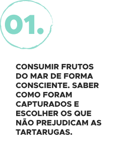
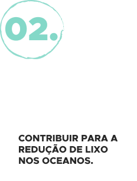
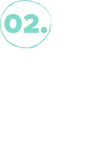
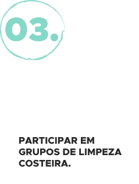
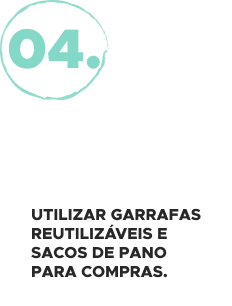
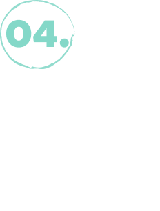
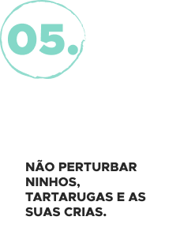
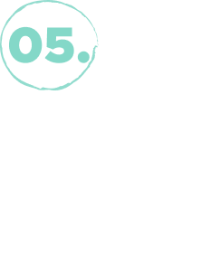
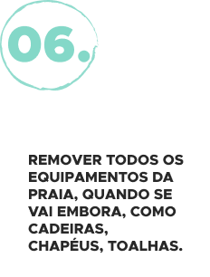
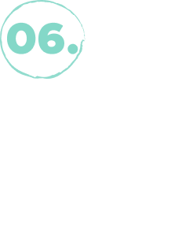
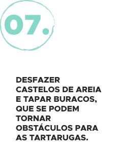
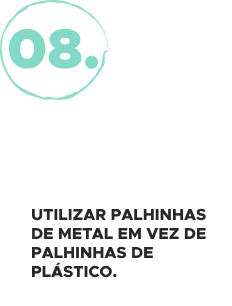
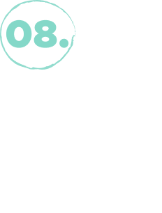
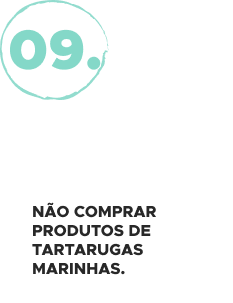
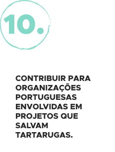
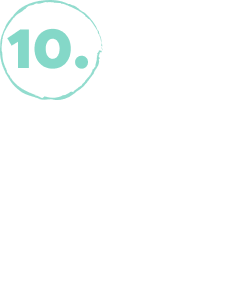
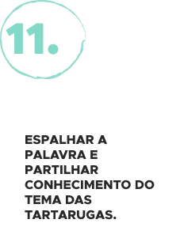
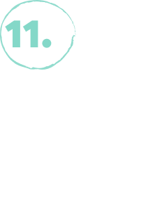
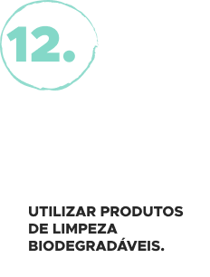
Colabora com os projetos que nos protegem.
Programa Tatô — Oceanário de Lisboa
Incialmente um projeto, tornou-se em 2018 uma ONG internacional, contando agora com
inúmeras associações nacionais e internacionais a seu lado, sendo uma delas
o Oceanário de Lisboa.
A sua estratégia passa por monitorizar e proteger as tartarugas marinhas, tal como sensibilizar, educar
e envolver as comunidades locais nos seus esforços.
o Oceanário de Lisboa.
A sua estratégia passa por monitorizar e proteger as tartarugas marinhas, tal como sensibilizar, educar
e envolver as comunidades locais nos seus esforços.
Formas de contribuir e apoiar
Donativos.
Voluntariado.
Turismo sustentável/Turtle watching.
Voluntariado.
Turismo sustentável/Turtle watching.
Projeto Costa — Consolidating Sea Turtle Conservation in the Azores
O objetivo deste projeto, criado nos Açores,
é a conservação das tartarugas marinhas,
através da preservação do seu habitat no oceano Atlântico.
Isto é feito através da recolha de dados sobre capturas acidentais, recolha de dados biológicos e demográficos, ensinar boas práticas de manuseamento
para os pescadores e educar e envolver as comunidades locais e turistas para ações de conservação da espécie.
é a conservação das tartarugas marinhas,
através da preservação do seu habitat no oceano Atlântico.
Isto é feito através da recolha de dados sobre capturas acidentais, recolha de dados biológicos e demográficos, ensinar boas práticas de manuseamento
para os pescadores e educar e envolver as comunidades locais e turistas para ações de conservação da espécie.
Marine Megafauna Foundation — Zoomarine
Esta fundação tem como objetico a proteção da fauna marinha do nosso planeta; desde
pesquisa pioneira, educação e soluções de conservação sustentáveis, a Marine Megafauna Foundation
pretende
criar um mundo onde a vida marinha e os seres humanos possam prosperar juntos.
Formas de contribuir e apoiar
Donativos.
Comprar itens da fundação nas lojas Zoomarine.
Visitar o Zoomarine — Parte dos custos revertem para a fundação.
Comprar itens da fundação nas lojas Zoomarine.
Visitar o Zoomarine — Parte dos custos revertem para a fundação.
Projeto TAMAR — Brasil (Protocolos com Zoomarine)
O projeto TAMAR começou como uma iniciativa para
a conservação de espécies de tartarugas marinhas encontradas no litoral brasileiro; com 24 bases espalhadas pelo litoral brasileiro, a fundação realiza conservação
e pesquisa aplicada de tartarugas como também a educação ambiental das populações e o seu desenvolvimento sustentável, alternativo à caça destas espécies.
a conservação de espécies de tartarugas marinhas encontradas no litoral brasileiro; com 24 bases espalhadas pelo litoral brasileiro, a fundação realiza conservação
e pesquisa aplicada de tartarugas como também a educação ambiental das populações e o seu desenvolvimento sustentável, alternativo à caça destas espécies.